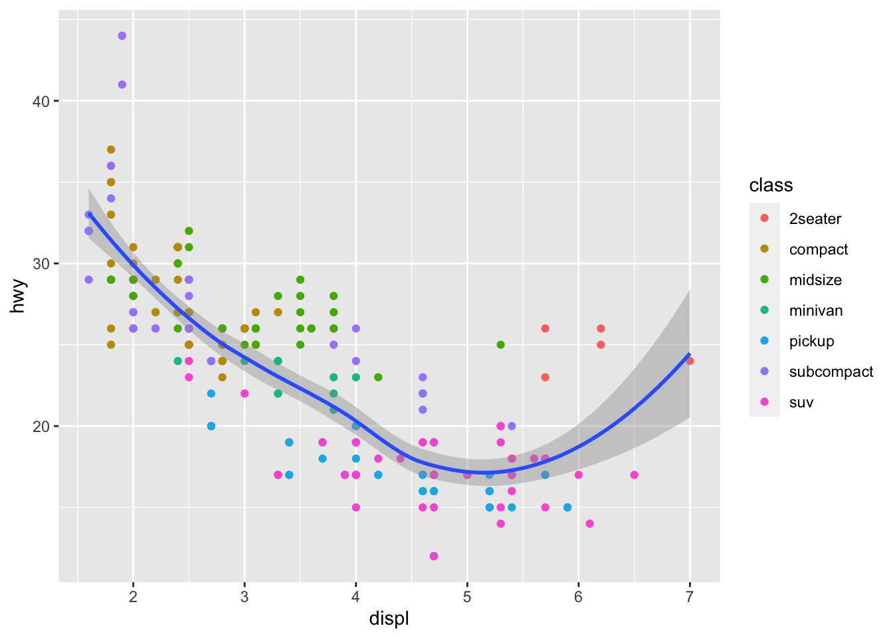
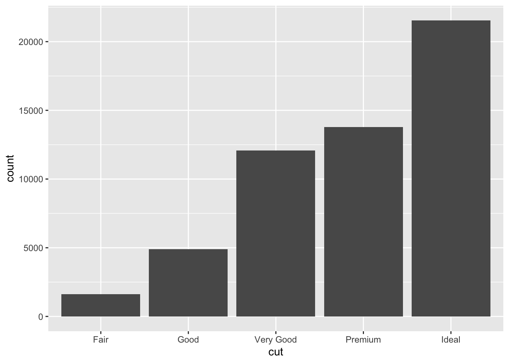
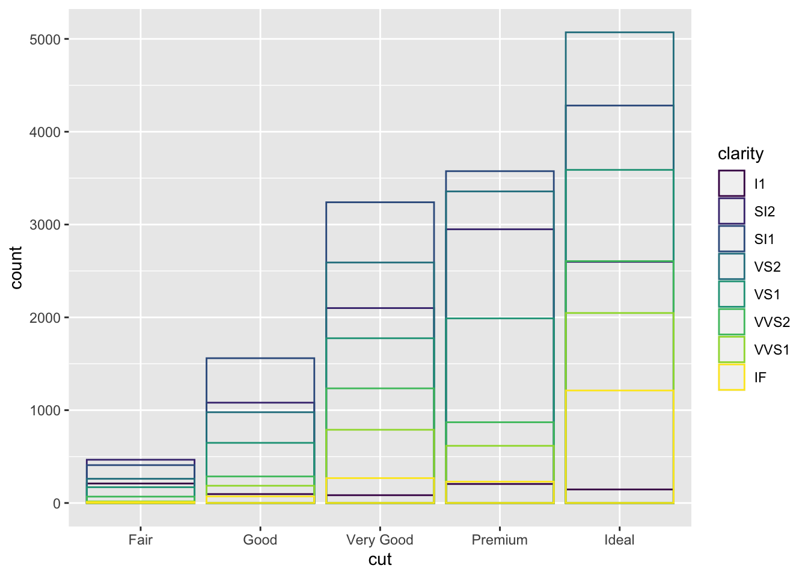
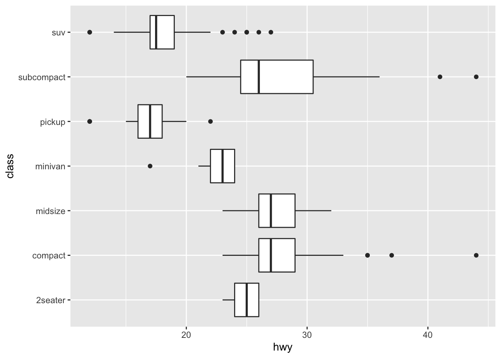
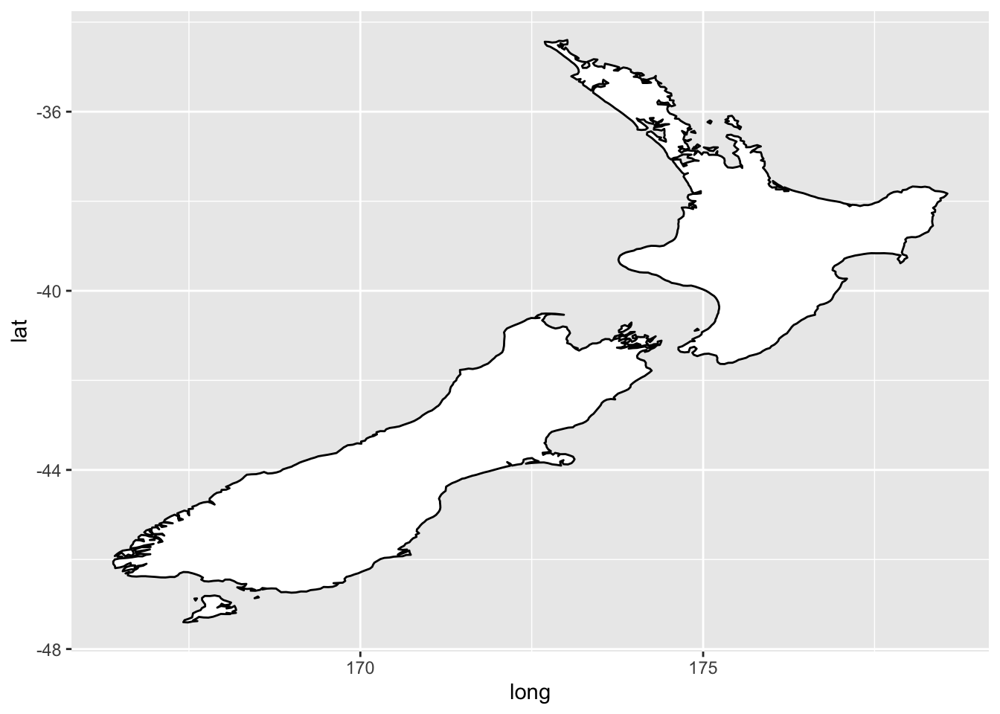

Chapter 3 scatter plot is not usefull for categorical
3.0.1 3.3 Aesthetic mappings
The greatest value of a picture is when it forces us to notice what we never expected to see.” — John Tukey
An aesthetic is a visual property of the objects in your plot. Aesthetics include things like the size, the shape, or the color of your points. The word “value” is used to describe data and the word “level” to describe aesthetic properties.
To map an aesthetic to a variable, associate the name of the aesthetic to the name of the variable(You can also set the aesthetic properties of your geom manually. For example, we can make all of the points in our plot blue using colour = blue) inside aes() as shown in example below (Note: the x and y locations of a point are themselves aesthetics, visual properties that you can map to variables to display information about the data). ggplot2 will automatically assign a unique level of the aesthetic (here a unique color) to each unique value of the variable, this process is known as scaling. . ggplot2 will also add a legend that explains which levels correspond to which values.
ggplot(data = mpg) +
geom_point(mapping = aes(x = displ, y = hwy, color = class)) # Inexample, we mapped class to the color aesthetic, but we could have mapped class to the size aesthetic in the same way.
Mapping class to the size aesthetic give us the exact size of each point within its class. But, this give us warning , because we are mapping an unordered variable (class) to an ordered aesthetic (size), which is not a good idea.
ggplot(data = mpg) +
geom_point(mapping = aes(x = displ, y = hwy, size = class), color = "blue") # Again, we could have mapped class to the alpha aesthetic, which controls the transparency of the points, or to the shape aesthetic, which controls the shape of the points. We also manually assigned colour to blue. To set an aesthetic manually, set the aesthetic by name as an argument of your geom function; i.e. it goes outside of aes(). For color name, it must be charcter string, for size, it must be in mm, for shape, it must be a number corresponding to shapes (1-0)## Warning: Using size for a discrete variable is not advised.So, npw we understand how to map aesthetic. What happend after you mapped it?
Once you map an aesthetic, ggplot2 takes care of the rest. It selects a reasonable scale to use with the aesthetic, and it constructs a legend that explains the mapping between levels and values. For x and y aesthetics, ggplot2 does not create a legend, but it creates an axis line with tick marks and a label. The axis line acts as a legend; it explains the mapping between locations and values.
3.0.1.1 Exercises 3.3.1
- What’s gone wrong with this code? Why are the points not blue? Answer : Because they are not supposed to be in aes(), they supposed to be an argument to aes on its owns
ggplot(data = mpg) +
geom_point(mapping = aes(x = displ, y = hwy, color = "blue")) # correct one is geom_point(mapping = aes(x = displ, y = hwy), color = "blue")
- Which variables in mpg are categorical? Which variables are continuous? (Hint: type ?mpg to read the documentation for the dataset). How can you see this information when you run mpg?
Answer :
Categorical varibales : manufacturer, model, trans , class
continuous Variables : displ, year, cty, hwy,
## Rows: 234
## Columns: 11
## $ manufacturer <chr> "audi", "audi", "audi", "audi", "audi", "audi", "audi", …
## $ model <chr> "a4", "a4", "a4", "a4", "a4", "a4", "a4", "a4 quattro", …
## $ displ <dbl> 1.8, 1.8, 2.0, 2.0, 2.8, 2.8, 3.1, 1.8, 1.8, 2.0, 2.0, 2…
## $ year <int> 1999, 1999, 2008, 2008, 1999, 1999, 2008, 1999, 1999, 20…
## $ cyl <int> 4, 4, 4, 4, 6, 6, 6, 4, 4, 4, 4, 6, 6, 6, 6, 6, 6, 8, 8,…
## $ trans <chr> "auto(l5)", "manual(m5)", "manual(m6)", "auto(av)", "aut…
## $ drv <chr> "f", "f", "f", "f", "f", "f", "f", "4", "4", "4", "4", "…
## $ cty <int> 18, 21, 20, 21, 16, 18, 18, 18, 16, 20, 19, 15, 17, 17, …
## $ hwy <int> 29, 29, 31, 30, 26, 26, 27, 26, 25, 28, 27, 25, 25, 25, …
## $ fl <chr> "p", "p", "p", "p", "p", "p", "p", "p", "p", "p", "p", "…
## $ class <chr> "compact", "compact", "compact", "compact", "compact", "…- Map a continuous variable to color, size, and shape. How do these aesthetics behave differently for categorical vs. continuous variables? Answer : DOnt know the answer. Below are mapped categorical and continues.
ggplot(data = mpg) +
geom_point(mapping = aes(x = displ, y = hwy, color = displ, size = cty, shape = )) # correct one is geom_point(mapping = aes(x = displ, y = hwy), color = "blue")ggplot(data = mpg) +
geom_point(mapping = aes(x = displ, y = hwy, color = manufacturer, size = model, shape = class)) ### Warning: Using size for a discrete variable is not advised.## Warning: The shape palette can deal with a maximum of 6 discrete values because
## more than 6 becomes difficult to discriminate; you have 7. Consider
## specifying shapes manually if you must have them.## Warning: Removed 62 rows containing missing values (geom_point).- What happens if you map the same variable to multiple aesthetics? Answer : DOnt have answer
## Warning: Using size for a discrete variable is not advised.- What does the stroke aesthetic do? What shapes does it work with? (Hint: use ?geom_point)
The point geom (geom_point()) is used to create scatterplots. The scatterplot is most useful for displaying the relationship between two continuous variables. It can be used to compare one continuous and one categorical variable, or two categorical variables, but a variation like geom_jitter(), geom_count(), or geom_bin2d() is usually more appropriate. A bubblechart is a scatterplot with a third variable mapped to the size of points.
geom_point() understands the following aesthetics : x, y , alpha , colour , fill, group , shape , size ,stroke (x and y are necessary). stroke aesthetic to modify the width of the border.
- What happens if you map an aesthetic to something other than a variable name, like aes(colour = displ < 5)? Note, you’ll also need to specify x and y.
Answer : It will create the dataset with conition provided e.g FALSE and TRUE
3.0.1.2 3.4 Common problems
- In ggplot2 graphics, + has to come at the end of the line, not the start. The code below show the correct and wrong code
Wrong
correct

Use this command to solve problems with functions ?function_name or selecting the function name and pressing ?F1 in RStudio.
Read error messages. Sometimes the solution is buried in the error message nd we ingore it.
3.0.1.2.1 Facets
One way to add additional variables is with aesthetics. Another way, particularly useful for categorical variables, is to split your plot into facets, subplots that each display one subset of the data.
I will come back here
3.0.2 3.6.1 Exercises
3.0.2.1 3.6 Geometric objects
Different plots use a diffrent visual object to represent the same data. In ggplot2 syntax, we say that they use different geoms.. A geom is the geometrical object that a plot uses to represent data. There are over 4o geoms available in ggplot2 and more with extension packages (see https://exts.ggplot2.tidyverse.org/gallery/). Also ggplot2 cheetsheet is a great resource for ggplot2 (see here: https://rstudio.com/wp-content/uploads/2015/03/ggplot2-cheatsheet.pdf). Some couple example of ggplot2 geom are:
- bar charts use bar geoms
- line charts use line geoms
- boxplots use boxplot geoms, and so on
- Scatterplots break the trend; they use the point geom
Note: Every geom function in ggplot2 takes a mapping argument. But, not every aesthetic works with every geom. You could set the shape of a point, but you couldn’t set the “shape” of a line. On the other hand, you could set the linetype of a line.
The example below shows ggplot with point geom and smooth geom.

## `geom_smooth()` using method = 'loess' and formula 'y ~ x'
To display multiple geoms in the same plot, add multiple geom functions to ggplot(): as shown below:
ggplot(data = mpg) +
geom_point(mapping = aes(x = displ, y = hwy)) +
geom_smooth(mapping = aes(x = displ, y = hwy))## `geom_smooth()` using method = 'loess' and formula 'y ~ x'
To solve problem of updating in multiple geom variables (forexample x in above), you can pass a set of mappings to ggplot(). ggplot2 will treat these mappings as global mappings that apply to each geom in the graph. In other words, the code below will produce the same plot as the previous code:
## `geom_smooth()` using method = 'loess' and formula 'y ~ x'
Also, mappings in a geom are treated as local and will overwrite the global mappings. The local mappings can be use to xtend or overwrite the global mappings for that layer only. This makes it possible to display different aesthetics in different layers. In the example below, the color aes is local to geom_point and at the same time inherit the global mappings (mapping = aes(x = displ, y = hwy)). We can also use this idea to specify diff data for each geom layer.
ggplot(data = mpg, mapping = aes(x = displ, y = hwy)) +
geom_point(mapping = aes(color = class)) +
geom_smooth()## `geom_smooth()` using method = 'loess' and formula 'y ~ x'
3.0.2.1.1 3.7 Statistical transformations
The diamonds dataset comes in ggplot2 and contains information about ~54,000 diamonds, including the price, carat( weight of the diamond (0.2–5.01)), color (diamond colour, from D (best) to J (worst)), clarity(clarity a measurement of how clear the diamond is (I1 (worst), SI2, SI1, VS2, VS1, VVS2, VVS1, IF (best)), and cut (quality of the cut (Fair, Good, Very Good, Premium, Ideal)) of each diamond. The following chart displays the total number of diamonds in the diamonds dataset, grouped by cut. On the x-axis, the chart displays cut, a variable from diamonds. On the y-axis, it displays count, but count is not a variable in diamonds.
Many graphs, like scatterplots, plot the raw values of your dataset. Other graphs, like bar charts, calculate new values(using stat, short for statistical transformation) to plot:
bar charts, histograms, and frequency polygons bin your data and then plot bin counts, the number of points that fall in each bin.
smoothers fit a model to your data and then plot predictions from the model.
boxplots compute a robust summary of the distribution and then display a specially formatted box.
You can learn which stat a geom uses by inspecting the default value for the stat argument. For example, ?geom_bar shows that the default value for stat is “count”, which means that geom_bar() uses stat_count(). You can generally use geoms and stats interchangeably. For example, you can recreate the previous plot using stat_count() instead of geom_bar(). This works because every geom has a default stat; and every stat has a default geom.
 There are three reasons you might need to use a stat explicitly:
- You might want to override the default stat.
- You might want to override the default mapping from transformed variables to aesthetics.For example, you might want to display a bar chart of proportion, rather than count:
- You might want to draw greater attention to the statistical transformation in your code
3.0.3 3.7.1 Exercises
3.0.3.1 3.8 Position adjustments
We can colour a bar chart using either the colour aesthetic, or, more usefully, fill:
ggplot(data = diamonds) +
geom_bar(mapping = aes(x = cut, colour = cut)) # notice here, both aesthetic are the same variable cut. What will happend if we change the variable in file?

Note: When we map different variable to the fill, like clarity: the bars are automatically stacked. Each colored rectangle represents a combination of cut and clarity

The stacking is performed automatically by the position adjustment specified by following position argument. If you don’t want a stacked bar chart, you can use one of three other options:
“identity” : “identity” will place each object exactly where it falls in the context of the graph.
“fill” : “fill” works like stacking, but makes each set of stacked bars the same height. This makes it easier to compare proportions across groups.
“dodge” : “dodge” places overlapping objects directly beside one another. This makes it easier to compare individual values
#identity example
ggplot(data = diamonds, mapping = aes(x = cut, fill = clarity)) +
geom_bar(alpha = 1/5, position = "identity")
ggplot(data = diamonds, mapping = aes(x = cut, colour = clarity)) +
geom_bar(fill = NA, position = "identity")
#fill example
ggplot(data = diamonds) +
geom_bar(mapping = aes(x = cut, fill = clarity), position = "fill")
#dogdge example
ggplot(data = diamonds) +
geom_bar(mapping = aes(x = cut, fill = clarity), position = "dodge") 3.9.1 Exercises
3.9.1 Exercises
To be done
3.0.3.1.1 Position Adjustemnt in Scatter Plot
Sometimes overlaf with each other and the complete points in dataset my be seen less in the plot because some overlap. This problem is known as overplotting. We use “jitter” to add noise to the points, since no two points will likely have the same noise, each point will now be plotted independely.
ggplot2 comes with a useful shorthand for geom_point(position = "jitter") as geom_jitter()
# with noise
ggplot(data = mpg) +
geom_point(mapping = aes(x = displ, y = hwy), position = "jitter")
3.0.3.2 3.9 Coordinate systems : The most difficult part of ggplot2
- Cartesian coordinate system is the default coordinate system
- coord_flip() switches the x and y axes. Useful for horizonatl boxplots and long labels (sometimes long labels on x-axis are too long to fit)

 3. coord_quickmap() sets the aspect ratio correctly for maps (Useful for spatial data with ggplot2)
nz <- map_data("nz")
ggplot(nz, aes(long, lat, group = group)) +
geom_polygon(fill = "white", colour = "black")
ggplot(nz, aes(long, lat, group = group)) +
geom_polygon(fill = "white", colour = "black") +
coord_quickmap()
coord_polar(), this shows an nteresting connection between a bar chart and a Coxcomb chart.
3.0.3.2.1 3.8.1 Exercises
To be done
3.0.3.3 3.10 The layered grammar of graphics
We now have a template for ggplot with seven parameters (though not all can be apply to your plot)
- DATA
- GEOM_FUNCTION
- MAPPINGS
- STAT
- POSITION
- COORDINATE_FUNCTION
- FACET_FUNCTION
```{r, eval= FALSE}
ggplot(data = <DATA>) +
<GEOM_FUNCTION>(
mapping = aes(<MAPPINGS>),
stat = <STAT>,
position = <POSITION>
) +
<COORDINATE_FUNCTION> +
<FACET_FUNCTION>
```The seven parameters are what makes the grammar of graphics. Just like English language grammer, you can used it to construct any sentences. The grammer of graphics also allow one to construct any plot as a combination of the these parameters